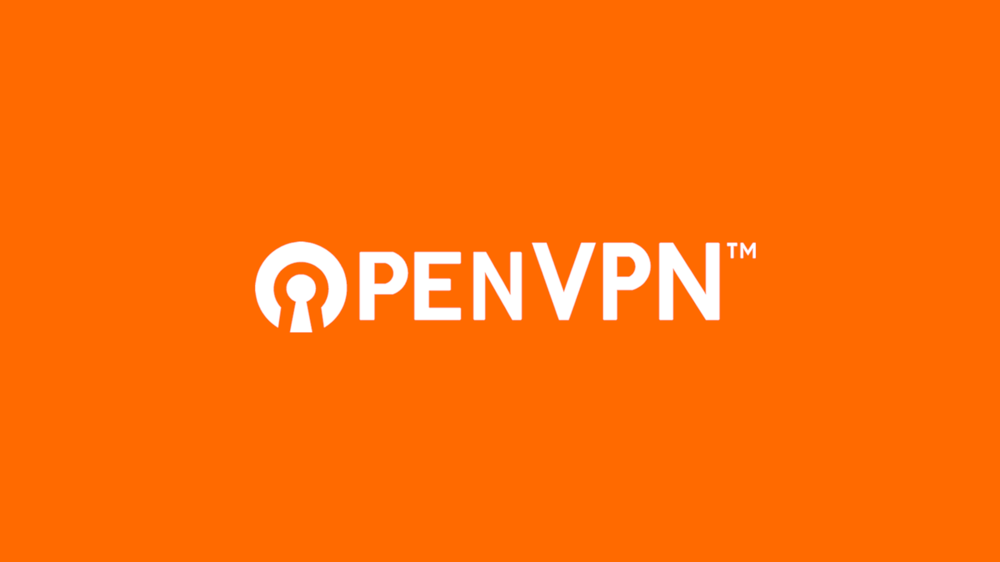

Setting up an OpenVPN server from scratch on Ubuntu 20.04

Memilih penyedia
Untuk menyiapkan VPN, kita perlu menemukan di mana kita akan meng-hostnya.
Ada banyak penyedia VPS yang menawarkan server hanya dengan $ 2 per bulan, tetapi ada beberapa hal yang perlu Anda pertimbangkan ketika memilih penyedia VPS:
- Teknologi virtualisasi – pastikan penyedia Anda menggunakan KVM atau Xen alih-alih OpenVZ. OpenVZ adalah teknologi virtualisasi berbasis kontainer yang digunakan pada bagian bawah termurah dari paket VPS barel. Mesin OpenVZ menjalankan kernel Linux lama yang tidak didukung oleh Wireguard, Docker dan perangkat lunak modern lainnya dan cara OpenVZ dibangun memungkinkan penyedia Anda mengintip aktivitas dan file Anda dengan sangat mudah. Hindari
- Alamat IPv4 - ini hanya berlaku untuk opsi VPS ultra budget, tetapi beberapa penyedia hanya memberi Anda alamat IPv6. Ini tidak umum saat ini, tetapi karena kekurangan alamat IPv4 kita mungkin mulai melihatnya lebih dan lebih sering.
- Lokasi - cukup jelas. Jika Anda ingin menonton konten Amerika – pilih pusat data Amerika. Jika Anda ingin torrent LINUX ISO, jangan memilih Jerman atau Austria karena mereka memiliki undang-undang anti-pembajakan yang sangat ketat. Jika Anda ingin menggunakan VPN Anda untuk bermain game, perlu diingat bahwa semakin jauh server, semakin besar latensinya. Jika Anda benar-benar serius tentang privasi, pilih VPS di luar 14 mata.
Dalam tutorial ini saya akan menggunakan Linode
Menyiapkan akun
Setelah Anda mendaftar di situs web dan mengkonfirmasi email Anda, Anda harus memasukkan beberapa detail, termasuk nama, alamat, dan informasi kartu kredit Anda. Itu akan hampir sama untuk semua penyedia VPS meskipun kadang-kadang mereka menerima Bitcoin atau cryptocurrency lainnya.
Membuat VPS
Hal berikutnya yang perlu Anda lakukan adalah menambahkan server atau seperti Linode menyebutnya, “linode”. Ada banyak distro untuk dipilih, jika Anda mau Anda bahkan dapat pergi dengan Gentoo atau Arch, tetapi untuk tutorial ini saya akan pergi dengan versi terbaru Ubuntu.
Anda juga ingin memilih lokasi, saya akan memilih Inggris karena itu yang paling dekat dengan saya secara fisik.
Kita akan mengambil rencana “Nanode” termurah. Dan bahkan jika nanti Anda memutuskan untuk mengatur server email, instance Nextcloud atau blog pribadi, konfigurasi ini masih akan lebih dari cukup.
Linode Label tidak begitu penting, dan juga tidak tag. Aku akan memanggil wolfgangsvpn saya.
Setelah itu Anda harus memilih kata sandi root dan mengunggah kunci SSH, yang tidak akan kami lakukan sekarang, saya akan menjelaskan mengapa nanti. Terakhir centang kotak yang mengatakan “IP Pribadi” dan klik tombol buat di sebelah kanan … Dan di sana kita pergi, server kita sekarang dibuat.
Menghasilkan kunci SSH
Sekarang Anda akan melihat panel kontrol server Anda, dan saat server dimulai, mari kita hasilkan kunci SSH untuk itu. Menggunakan kata sandi cleartext untuk masuk ke server Anda tidak pernah merupakan ide yang baik karena kata sandi tidak dienkripsi dalam perjalanan dan dapat diekspos pada jaringan yang bermusuhan. Dengan membuat kunci SSH, kami akan membuatnya sehingga Anda hanya dapat masuk ke server jika Anda memiliki file kunci dan kata sandi, dan pada saat yang sama kata sandi dienkripsi.
Jika Anda menggunakan Linux, Anda mungkin sudah tahu cara membuka terminal, jika Anda menggunakan Mac, Anda dapat menemukan aplikasi Terminal di folder Aplikasi Anda, dan pada Windows 10 Anda harus membuka PowerShell dengan hak istimewa administrator dan menginstal SSH menggunakan perintah ini:
PS C:\> Add-WindowsCapability -Online -Name OpenSSH.Client*Ini adalah perintah yang akan menghasilkan kunci ssh kami. Algoritma RSA dengan ukuran kunci 4096 adalah apa yang saya sarankan secara pribadi, karena cukup aman dan didukung secara luas.
ssh-keygen -t rsa -b 4096Tekan Enter saat diminta lokasi utama untuk menyimpannya ke yang default lalu masukkan kata sandi pilihan Anda.
Masuk ke server
Sekarang server kami telah dimulai dan kami siap untuk masuk. Salin alamat IP dari panel kontrol server, kembali ke terminal dan ketik
ssh root@ip-addressKetik ya, masukkan kata sandi root yang Anda tentukan pada langkah pertama dan hanya itu, kami masuk.
Memperbarui OS
Pertama dan terutama, mari kita perbarui sistem operasi dan perangkat lunak kita:
apt-get update && apt-get upgradeSaya juga akan menginstal editor teks favorit saya, jangan ragu untuk menggunakan apa pun yang Anda inginkan, misalnya nano.
apt install neovimMembuat pengguna
Sebanyak itu nyaman untuk tidak harus memasukkan kata sandi setiap saat, kita perlu membuat akun pengguna yang tidak root. Mengekspos login root pada server SSH mungkin bukan ide yang baik bahkan jika Anda memiliki otentikasi multi faktor. Panggil saya paranoid, tapi saya pikir harus memasukkan kata sandi root kadang-kadang adalah harga yang saya bersedia membayar untuk beberapa rasa aman. Jenis
useradd -G sudo -m wolfgang -s /bin/bashItu akan membuat pengguna, mengatur bash sebagai shell default untuknya dan memungkinkan penggunaan sudo.
Setelah itu kita harus membuat kata sandi untuk pengguna kita, menggunakan
passwd hadesMasukkan kata sandi Anda dua kali dan kami baik untuk pergi.
Menyalin kunci SSH dari host ke server
Sekarang setelah kami membuat pengguna kami, ini saat yang tepat untuk menyalin kunci SSH publik ke server. Buka jendela terminal kedua untuk terminal lokal Anda dan masukkan:
Linux atau Mac
ssh-copy-id hades@ip_addressWindows
type $env:USERPROFILE\.ssh\id_rsa.pub | ssh wolfgang@ip_address "mkdir -p ~/.ssh && chmod 700 ~/.ssh && cat >> ~/.ssh/authorized_keys && chmod 600 ~/.ssh/authorized_keys"Anda akan diminta untuk memasukkan kata sandi Anda dan setelah Anda melakukannya, kembali ke jendela terminal dengan server Anda. Jangan menutup jendela yang lain.
Membatasi SSH ke autentikasi kunci
Sekarang setelah kami menyalin kunci SSH ke server, kami harus membatasi otentikasi ke kunci publik saja. Mari kita edit file konfigurasi sshd
nvim /etc/ssh/sshd_configPertama-tama, mari kita ubah port default. Ini tidak akan berbuat banyak untuk keamanan, tetapi ini akan membantu dengan pemindai SSH yang menjengkelkan yang mencoba masuk dengan kredensial default. Tidak banyak, tetapi log keamanan pasti akan menjadi lebih mudah dibaca. Anda dapat menggunakan port apa pun yang tidak diambil oleh layanan lain, tetapi saya lebih suka menggunakan 69. Bagus
# Port 22
Port 69Selanjutnya, kita perlu menonaktifkan autentikasi kata sandi sehingga Anda hanya dapat masuk menggunakan kunci publik.
PasswordAuthentication noLast but not least, mari kita juga menonaktifkan login root
PermitRootLogin noSekarang simpan file dan mulai ulang layanan sshd menggunakan
systemctl restart sshdSekarang tanpa menutup jendela ini mari kita kembali ke mesin lokal kami dan mencoba masuk dengan kunci kami:
ssh -i ~/.ssh/id_rsa wolfgang@ip_address -p 69Jika Anda melihat prompt untuk memasukkan kata sandi kunci Anda, itu berarti kami baik untuk pergi. Ini juga merupakan ide yang baik untuk memverifikasi bahwa kita tidak dapat masuk dengan kata sandi kita lagi:
ssh wolfgang@ip_address -p 69Ini harus memberi kita “Izin ditolak”.
Membuat alias server
Tetapi Anda mungkin telah memperhatikan bahwa perintah ini agak panjang dan menjengkelkan untuk diketik, jadi mari kita perbaiki itu. Buat file di folder “.ssh” di direktori rumah Anda yang disebut “konfigurasi” dan edit menggunakan editor teks favorit Anda:
nvim ~/.ssh/configDi sini kita akan membuat alias untuk VPS kita
Host wolfgangsvpn # choose a name for your server
User wolgang # the username of the user that we created
Port 69
IdentityFile ~/.ssh/id_rsa # that's the location of our key file
HostName ip_address # that's the IP address of our serverSimpan dan tutup, dan sekarang kita bisa masuk ke server kita hanya dengan mengetik ssh wolfgangsvpn
Jika Anda juga tidak ingin melihat dinding teks ini setiap kali Anda login, ketik touch .hushlogin
Menyiapkan OpenVPN
Saya tahu bahwa Wireguard telah menjadi protokol VPN baru yang panas yang difokuskan semua orang akhir-akhir ini, tetapi dalam video ini saya akan menggunakan OpenVPN sebagai gantinya. Mengapa? Karena memiliki dukungan yang lebih luas ketika datang ke aplikasi klien dan beberapa aplikasi yang akan saya bicarakan di bagian ke-2 dari tutorial ini menggunakan OpenVPN. Jika Anda tertarik untuk menyiapkan server Wireguard, ada banyak tutorial di Internet tentang hal itu.
Biasanya menyiapkan server OpenVPN membutuhkan waktu karena Anda perlu menginstal paket, menghasilkan kunci, mengatur IPTable, menulis file konfigurasi untuk server dan klien. Untungnya, kami tidak akan melakukan semua ini dalam tutorial dan sebagai gantinya kami akan menggunakan skrip road warrior OpenVPN dari pengguna github bernama Nyr - https://github.com/Nyr/openvpn-install. Skrip ini akan melakukan semua kerja keras untuk kita dan yang harus kita lakukan adalah menjawab beberapa pertanyaan sederhana dan mengunduh file konfigurasi di akhir. Tak perlu dikatakan Anda tidak boleh hanya berkeliling mengeksekusi skrip acak yang Anda unduh dari internet, jadi jika Anda tahu beberapa bash, baca skripnya terlebih dahulu dan pastikan tidak ada yang mencurigakan di sana. Jika Anda tidak tahu bash apapun, mungkin mengirimkannya ke teman yang melakukannya. Setelah selesai dengan pembacaan skrip, klik mentah dan salin tautan dari browser Anda.
Masuk ke server Anda dan instal jika Anda belum melakukannya. Kadang-kadang datang dengan gambar OS Anda sudah, tapi kadang-kadang tidak.wget
sudo apt install wgetSelanjutnya, ketik , tekan Spasi dan tempelkan tautan yang Anda salin sebelumnya. Tekan Enterwget
Sekarang mari kita luncurkan script
sudo bash openvpn-install.shSkrip akan mengajukan beberapa pertanyaan, dan dalam banyak kasus Anda ingin memilih jawaban default. Untuk port, Anda dapat memilih port default, 1194, tetapi saya lebih suka memilih 443, karena 1194 dikenal sebagai “port OpenVPN” dan dalam beberapa kasus dapat diblokir di jaringan Anda. 443 adalah port yang sama yang digunakan untuk HTTPS, tetapi sedangkan HTTPS menggunakan TCP, OpenVPN (dalam konfigurasi ini) menggunakan UDP, sehingga mereka tidak akan saling bertentangan.
Anda juga akan ditanya DNS mana yang ingin Anda gunakan. Jangan ragu untuk memilih apa pun yang Anda suka, tetapi saya biasanya memilih 1.1.1.1
Sedangkan untuk nama klien, pilih apa pun yang Anda suka.
Sekarang setelah konfigurasi selesai, tekan tombol apa pun dan proses instalasi akan dimulai. Ini sepenuhnya otomatis dan pada akhirnya Anda akan mendapatkan file konfigurasi yang akan kami unduh ke mesin lokal kami nanti. Masalahnya adalah bahwa skrip menempatkan file di direktori root secara default, dan untuk mengunduhnya nanti, kita perlu memindahkannya ke direktori rumah pengguna kita dan memberi diri kita priviliges yang benar:
sudo mv /root/thinkpad.ovpn ~
sudo chown wolfgang thinkpad.ovpnDengan ini keluar dari jalan hanya ada satu hal yang tersisa untuk dilakukan di sisi server, dan itu adalah untuk menonaktifkan log. Mari kita edit file konfigurasi:
sudo nvim /etc/openvpn/server/server.confDan berubah menjadi verb 3``verb 0
Sekarang mulai ulang layanan OpenVPN:
systemctl restart openvpn-server@server.serviceDan di sana kita pergi! VPN yang benar-benar tidak menyimpan log. Menakjubkan.
Saya juga baru saja memperhatikan bahwa nama host server adalah “localhost”, yang tidak keren karena berbagai alasan. Jadi mari kita ubah menjadi sesuatu yang lain, saya akan menyebutnya “wolfgangsvpn”
Mengunduh file konfigurasi
Sekarang yang perlu kita lakukan adalah mengunduh file konfigurasi ke mesin lokal kita sehingga kita benar-benar dapat menggunakan VPN. Buka terminal pada mesin lokal Anda dan ketik Berikutnya, unduh file menggunakan perintah . Dan akhirnya ketik sftp servername``get configname.ovpn``exit
Sekarang jika Anda ingin menggunakan VPN ini untuk semua lalu lintas Anda, yang tidak saya rekomendasikan, Anda dapat mengunduh Tunnelblick di Mac, OpenVPN Connect di Windows atau memuatnya ke NetworkManager di Linux.
Bagus untuk memiliki
Pada titik ini kami memiliki server VPN barebones dan berjalan. Anda dapat berhenti di sini dan menggunakannya seperti Anda biasanya akan menggunakan VPN (dalam hal ini terima kasih untuk membaca dan saya senang saya bisa membantu), tetapi jika Anda ingin tahu bagaimana membuatnya lebih aman dan menambahkan beberapa fitur yang bagus untuk dimiliki, seperti upgrade tanpa pengawasan, teruslah membaca.
Opsional: Menginstal mosh
Sekarang, ssh bagus tetapi kadang-kadang menjengkelkan, terutama ketika Anda mengubah jaringan Anda dan koneksi Anda segera turun. Sebaliknya, saya lebih suka menggunakan mosh. Tidak ada shenenigans file konfigurasi yang rumit, Anda cukup menginstal mosh pada mesin lokal dan jarak jauh Anda, dan setelah itu Anda dapat menggunakan perintah sebagai pengganti drop-in untuk mosh``ssh
Opsional: Menyiapkan autentikasi multi-faktor
Sekarang, otentikasi kunci publik mungkin cukup aman untuk sebagian besar, tetapi jika Anda ingin menjadi lebih mewah, Anda juga dapat menambahkan MFA atau otentikasi multi-faktor. Cara kerjanya adalah Anda menginstal aplikasi di ponsel Anda (ada banyak aplikasi open source di Android seperti AndOTP) dan setiap kali Anda masuk, Anda mendapatkan kata sandi satu kali di aplikasi yang perlu Anda masukkan untuk masuk. Ini memberikan lapisan keamanan tambahan untuk server Anda yang dapat berguna bagi sebagian dari kita yang sangat paranoid.
Hal pertama yang harus Anda lakukan adalah menginstal Ya, protokol dibuat oleh Google, tetapi itu benar-benar open-source dan Anda tidak perlu menggunakan aplikasi Google Authenticator di ponsel Anda, ada banyak opsi open source seperti yang telah saya sebutkan.google-authenticator-libpam
sudo apt install libpam-google-authenticatorAfter that, launch the initialization script by typing . There, basically answer yes to all questions except for the one about multiple users and the one about 30 second tokens.google-authenticator
Once you’ve done that, you might have noticed a big QR code in your command line as well as the recovery codes. Make sure to write those codes down somewhere save, they’ll be useful in case you lose the access to the app on your phone. After that what you need to do is launch the authenticator app on your phone, I’ll use OTP Auth, add a new account and chooe “Scan a QR code”. After you scan the code, the account will be added to the app. And we’re done with the phone part for now.
Let’s go back to the server terminal and edit the authentication settings file for sshd:
sudo nvim /etc/pam.d/sshdHere we’ll comment out the line that says . Normally the two factor authentication will ask you for your user password and the one time password, but since we’re already using a public key with the password, having to enter your password twice is slightly annoying. That way you’ll only have to enter the public key password and the one time password.@include common-auth
Next we need to add this line to the end of the file:
auth required pam_google_authenticator.soLet’s save the file and quit. Now we need to edit the SSHD configuration file to make SSH aware of the new authentication method:
sudo nvim /etc/ssh/sshd_configHere we need to change the following lines:
ChallengeResponseAuthentication yes
UsePAM yesAnd add a new line after UsePAM that says:
AuthenticationMethods publickey,password publickey,keyboard-interactiveThat’s it, let’s save the file and exit. And now let’s restart the SSH service for the changes to take effect:
sudo systemctl restart sshdAs I mentioned in the beginning, it’s always a good idea to try and log in in a separate terminal window without closing the server session. Otherwise if you messed up you’ll be locked out of the SSH and obviously you don’t want that.
If you try to log in now you’ll see that apart from the usual public key password you’re also going to be asked for the one time password from your app. Once again, if you’re using Gnome, you won’t be prompted for the public key until you log out and log back in again, only the one time password from your phone app. Let’s enter the password and voila! Now our server is secured by two-factor authentication.
Optional: Unattended upgrades
One last thing that I want to show you today is unattended software upgrades. What this means is we’re going to have a script that runs and regularly, thus liberating us from the burden of having to log in to the server and do this manually. The server will also be rebooted for kernel updates, but since the reboot takes less than a minute, and since kernel updates are not very frequent, your VPN won’t actually have much downtime because of the upgrades. You can also disable the automatic reboots if you prefer to do it yourself.apt update``apt upgrade
So the first thing we need to do is to install the unattended-upgrades package:
sudo apt install unattended-upgrades apt-listchanges bsd-mailxNext, enable the stable security updates:
sudo dpkg-reconfigure -plow unattended-upgradesSetelah itu selesai, mari kita edit file konfigurasi
sudo nvim /etc/apt/apt.conf.d/50unattended-upgradesDi sini kita perlu mengatur alamat email kita yang akan digunakan untuk memperbarui pemberitahuan:
Unattended-Upgrade::Mail "mail@example.com";Dan kemudian juga mengaktifkan reboot otomatis, mengatur tugas pembersihan untuk menghapus kernel yang tidak digunakan dan mengatur waktu reboot otomatis pada pukul 5 pagi.
Unattended-Upgrade::Automatic-Reboot "true"; # this is kind of obvious
Unattended-Upgrade::Remove-Unused-Kernel-Packages "true";
Unattended-Upgrade::Remove-Unused-Dependencies "true";
Unattended-Upgrade::Automatic-Reboot "true";
Unattended-Upgrade::Automatic-Reboot-Time "05:00"; # here we'll specify when we want our system to rebootItu saja! Mari kita lihat apakah itu berhasil
sudo unattended-upgrades --dry-runJadi sekarang sistem Anda dan semua paket akan diperbarui secara otomatis dan Anda akan mendapatkan email setiap kali upgrade telah dilakukan.